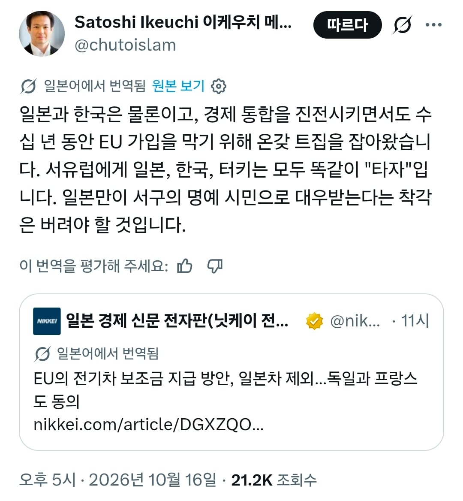

명예백인 입구컷 당함

명예백인 입구컷 당함
일본이 EU 따있했는데 탈구입아해야지
얘내 아직도 저래? 신기하네
투수가 되었어야 같은팀이지
그냥 유럽에 일본전기차 공장없어서잖아 뭔 명예 백인 ㅇㅈㄹ
EU 아닌 영국은 포함됨
브렉시트 했다고 기존에 얽혀있던 자동차 산업이 분리됐을리가 없잖아..
명예 백인 따잇
Germany and France have agreed on a joint position that would throw out the EU’s goal of fully climate-neutral new cars by 2035, trading looser CO2 targets for stricter ‘Made in Europe’ content rules. The deal arguably protects European assembly far more effectively than it does European technology, and the battery requirements are notably weaker than its rhetoric suggests.
독일과 프랑스는 2035년까지 신차의 완전한 기후 중립 목표를 폐기하고, 완화된 CO2 배출 목표를 '유럽산' 부품 사용 의무화 규정 강화로 대체하는 공동 입장에 합의했습니다. 이 합의는 유럽산 기술보다는 유럽 내 조립 생산을 훨씬 효과적으로 보호하는 것으로 해석될 수 있으며, 배터리 관련 요건 또한 표면적인 주장과는 달리 상당히 완화된 내용입니다.
Non-EU members like the UK, Norway, Iceland and Switzerland could qualify, provided that they align with EU trade defence and investment screening. Meanwhile, Japan, South Korea and Turkey, where Renault, Toyota, Hyundai and Ford all build cars for Europe, would be excluded. “This creates a European preference to ensure that our factories do not become mere assembly plants,” an Élysée source said.
영국, 노르웨이, 아이슬란드, 스위스와 같은 비EU 회원국도 EU 무역 방어 및 투자 심사 기준을 충족하는 경우 자격을 얻을 수 있습니다. 반면 르노, 도요타, 현대, 포드 등 유럽 시장용 자동차를 생산하는 일본, 한국, 터키는 제외됩니다. 엘리제궁 관계자는 "이는 유럽 내 공장들이 단순한 조립 공장으로 전락하지 않도록 하기 위한 유럽 우선 정책"이라고 밝혔습니다.
"이는 유럽 내 공장들이 단순한 조립 공장으로 전락하지 않도록 하기 위한 유럽 우선 정책"
어라? 탈아입구한지 100년도 넘엇는데 아직도?
엘프가 아니라 고블린이었고 ㅋㅋㅋ
중국 잡으려고 made in eu 했더니
중국은 스페인에있던 닛산공장사고 헝가리에 공장짓고있었고 볼보도 샀어서 이미 공장이 꽤 있는데
일본은 스페인에있던 공장 중국한테 팔았고 ㅋㅋ
영국에 공장만들어놨더니 eu탈퇴 ㅋㅋㅋ
캐나다에 있는 일본 차도 쳐맞고 있지 않나 ㄷㄷ
일본 자동차 공장이 스페인에 하나 영국에 하나 있었는데
스페인공장은 중국전기차회사에 몇년 전에 팔았고
마찬가지로 영국은 eu탈퇴해서 저거에 해당사항이 없어서
지금 eu에 무슨 자신들에게 확실한 우군 어쩌고 하는 조항이 있는데 그거 일본한테 적용시켜달라고 로비하고 있다더라
완성차 산업에서 중국 다음으로 무서운게 일본일거라
쟤들은 19세기에 탈아입구한 뽕맛을 못 잊어서 서구편 할려고 dna에 박혀 있는 애들임
그리고 그때 독재하던 ㅅㄲ들이 일본을 제국으로 만들던 ㅅㄲ들이라 그냥 믿고 기다리는게 dna
한국이 중립외교 할려고 하고
지도자 ㅂㅅ이면 갈아엎으려고 하는게 dna에 박혀있는거랑 반대임
19세기에서 웃으면 댐?
유럽에 끼려면 입맛에 존나 맞춰줘야하는데 일본도 꽤나 뻣뻣한 나라라 ㅋㅋ
명예백인이 아니라 걍 거기 공장있냐없냐지 그럼 우린 지원금 해당되니까 명예백인인거임?
남아프리카공화국 가서 명예백인 대우받을 수 있으니 추천함
일본제 전기차가 있음?
아직도 탈아입구의 꿈을 꾸고 있는겐가